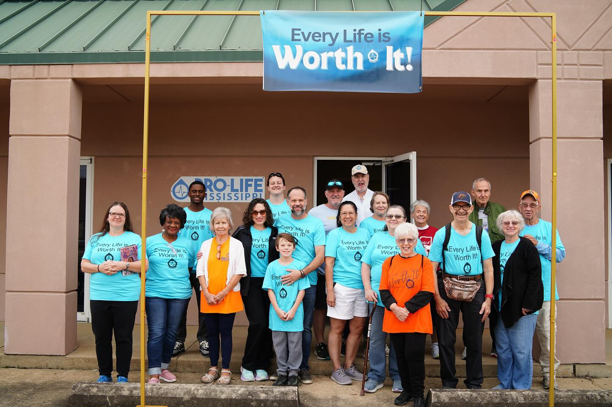

Faith-rooted. Community-forward. Built for the living.
Mississippi Life Alliance honors its foundational values by expanding practical care for families, children, and individuals across Mississippi.
We are becoming the safety net people can actually find.
For years, this movement showed up through prayer, advocacy, education, and public witness. Today, Mississippi Life Alliance is building the next chapter: tangible support, resource navigation, community closets, volunteer networks, donor partnerships, and the Porchlight Initiative.
Our core commitment: honoring life by supporting people through every phase of life.

Support
We connect people to real supplies, real relationships, and real follow-through.
Restore
We treat dignity as a strategy, not a slogan.
Empower
We help families and individuals move from crisis toward stability.
Leadership
Beverly McMillan
Allison Moore
Laura Duran
Our Team
Tammy Tillman
Janis Lane
Legal Information
Mississippi Life Alliance is a registered 501(c)(3) nonprofit organization. Donations are tax-deductible to the extent allowed by law.
64-0695536